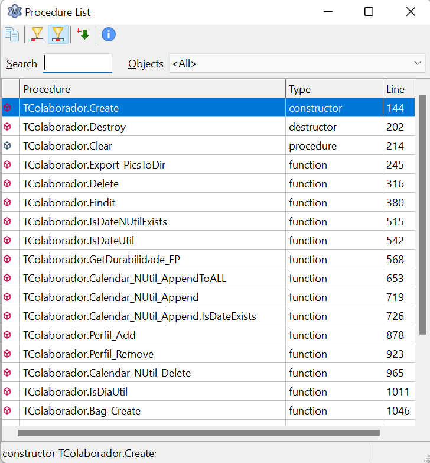

Todo sistema ou programa tem seus atalhos considerados úteis, no Lazarus não é diferente.
Se deseja ser produtivo com o Lazarus é bom aprendê-los. Há alguns atalhos que considero essenciais para sobreviver com o Lazarus:
F11: Invoca o editor de propriedades
F12: Troca entre o editor de código e editor de formulários
Ctrl+ALT+P: Invoca a paleta de componentes.
Ctrl+ALT+Setas: Invoca o modo de edição de colunas (Column Mode)
Ctrl+J: Invoca o ‘Code template’. Blocos de código repetitivos que não precisam ser digitados ou ‘colado’ todas as vezes. Crie um template(modelo) e o invoque com Ctrl+J toda vez que precisar.
ALT+G: Invoca a lista de procedimentos no seu código(eventos, procedures e functions), daí você escolhe para onde deseja ir.
É o fim do Ctrl+F ou ir para o inicio do código só para dar Ctrl+Click do Mouse:

Sobre produtividade, recomendo ler este pequeno e útil artigo na internet:
10 Things you did not know about Lazarus